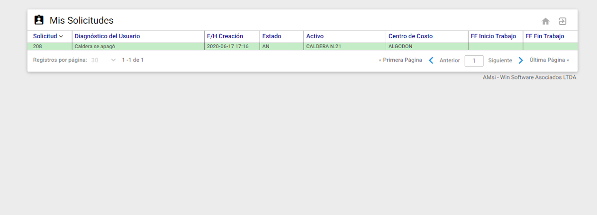
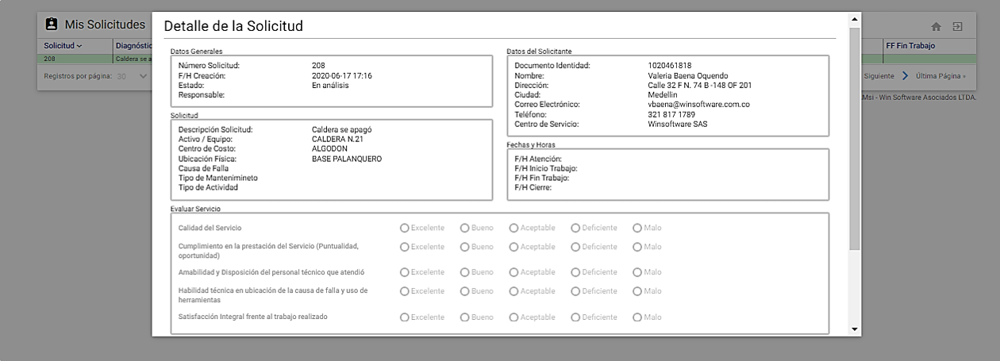
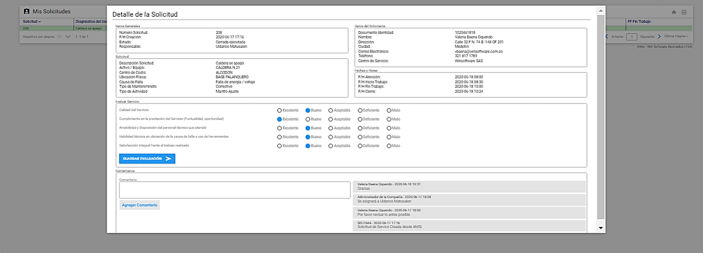
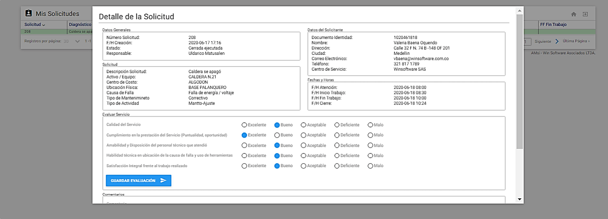

Se suministra información detallada del formulario Servicio Solicitado. Dicha información, especifica claramente el servicio solicitado así como el Centro de Servicio responsable de atender la SS. Se identifican los campos relacionados en el formulario Servicio Solicitado para la creación de SS y se reconocen los comandos que aparecen en pantalla.
En esta sección
- Formulario Servicio Solicitado para Usuarios relacionados por Centros de Costo
- Formulario Servicio Solicitado para Usuarios relacionados por Compañía.
- Campos de Servicio Solicitado
- Campos de Información de Activo / Equipo
- Videos de capacitación
Creación de Solicitudes de Servicio
Ingrese a AMsi y elija la opción Crear Nueva Solicitud :
 Imagen 6. Crear Nueva Solicitud
Imagen 6. Crear Nueva Solicitud
Ventana Creación de la Solicitud de Servicio
AMsi responde mostrando en una nueva ventana, el Detalle del Servicio a Solicitar. Es decir, la información personal del solicitante información del servicio solicitado e información del Activo/Equipo objeto de la SS de mantenimiento.
 Imagen 7. Ventana Creación SS
Imagen 7. Ventana Creación SS
A continuación, se describen los campos que la componen, sobre cada uno se da una breve explicación:
Campos Del Formulario Datos Del Solicitante
Este cuadro es informativo y hace referencia a los Datos del Solicitante necesarios para la creación de una SS. Contiene la información corporativa del solicitante y todos los campos se encuentran bloqueados (sección Actualizar Perfil).
Nro. Documento: Este campo muestra el número de Identificación de la persona solicitante.
Nombre Completo: Este campo muestra el Nombre completo de la persona que solicita un servicio de mantenimiento.
Teléfono: Este campo muestra el Número telefónico donde se puede localizar a la persona solicitante.
Dirección: Este campo muestra la dirección asignada y que corresponde a la organización a la cual pertenece la persona solicitante.
Ciudad: Este campo muestra la ciudad asignada y en la cual vive el solicitante o está ubicada la institución para la cual labora.
Correo Electrónico: Este campo muestra la Dirección de correo electrónico asignada a la persona solicitante por la organización, o el correo personal del solicitante en caso de no tener una cuenta de correo electrónico corporativa.
Campos Del Formulario Servicio Solicitado para usuarios relacionados por Centros de Costo
El formulario Servicio Solicitado hace referencia a los datos de la SS que se está creando.
Todos los campos marcados con asterisco (*) son de carácter obligatorio.
Mensaje: Este mensaje que se desliza, es configurado por el Administrador General del AMsi en General. Para mayor información dirigirse al capítulo Configuración AMsi. Su finalidad es notificar a los usuarios solicitantes.
Centro de Servicio: Este campo permanece bloqueado y muestra la información de la compañía relacionada al Centro de Costo elegido. Esto, para usuarios que tengan relacionado uno o varios Centros de Costos de una o varias compañías. En caso de ser un usuario que tenga asociado Todos Los Centros de Costo, este campo se muestra desbloqueado y es posible elegir el Centro de Servicio deseado.
Centro de Costo: En este campo se elige de la lista desplegable el Centro de Costo al que se le va a realizar la SS. Al seleccionar el Centro de Costo, se muestra automáticamente en el campo Centro de Servicio, el nombre del Centro de Servicio al cual está asociado el Centro de Costo seleccionado. Esto, para usuarios que tengan relacionado uno o varios Centros de Costos de una o varias compañías. Solo se listan los Centros de Costo que el usuario solicitante tenga asociados. En caso de ser un usuario que tenga asociado Todos Los Centros de Costo, este campo se listan únicamente los Centros de Costo existentes en el Centro de Servicio seleccionado.
Descripción: En este campo se digita en forma concreta el servicio de mantenimiento requerido. Se detalla el problema, inconveniente, necesidad o avería a ser atendida.
Activo/Equipo: En este campo se ingresa el Activo/Equipo de la organización que requiere atención de mantenimiento. Dependiendo de la configuración en AMsi, este campo se puede habilitar:
- Para selección del Activo en la ventana Detalle de Activos que es llamada por el ícono Subgrupo que se encuentra en la parte derecha del campo:
 Imagen 8. Ventana Activos
Imagen 8. Ventana Activos
La lista desplegada incluye los Activos/Equipos creados previamente en el AM y que a la vez están asociados al Centro de Costo de la compañía correspondiente y en estado activo y operante. En esta nueva ventana también hay posibilidad de hacer subgrupos.Para seleccionar el Activo dar doble clic sobre el registro sombreado en verde. Cuando se cierra esta ventana automáticamente se observa que aparece el código y la descripción del Activo/Equipo. (Ver imagen 7)
Existe control en todos los casos sobre el Centro de Costo, es decir, solo se despliegan o se permiten elegir Activos/Equipos que estén asociados al Centro de Costo definido en el campo Centro de Costo.
- Para describir el Activo/Equipo en lenguaje natural
Para describir el Activo/Equipo en lenguaje natural dar clic al campo ubicado al lado izquierdo.
Nota: Este se usa en caso de que el usuario solicitante no encuentre o no identifique el Activo por medio del Subgrupo (opción anterior).
inmediatamente se habilitan dos campos que pueden ser diligenciados.
 Imagen 9. Descripción del Activo en Lenguaje Natural
Imagen 9. Descripción del Activo en Lenguaje Natural
Activo / Equipo en Lenguaje Natural: Es para describir el nombre del Activo que se va a referenciar en la SS y que debe de ser fácilmente identificable para el área de Mantenimiento.
Ubicación Física: Aqui se debe describir también en lenguaje natural la ubicación física del Activo/Equipo referenciado.
Prioridad: Este campo viene predefinido con las prioridades Alta, Media y Baja. Lo utiliza el programador de mantenimiento como guía para establecer la agilidad (normal o priorizada) en la asignación del recurso humano de mantenimiento para la ejecución del trabajo solicitado.
F/H Tentativa del Usuario: En este campo se asigna una fecha y hora que el usuario solicitante considere que el área de Mantenimiento le haga entrega de la solicitud realizada. Es un campo opcional de diligenciar y que es configurable por el usuario administrador.
Una vez se diligencie el formulario accione el botón ENVIAR . Este botón envía inmediatamente la SS a la base de datos del AM para ser revisada por el área de mantenimiento encargada y proceder así con su análisis y asignación. Una vez enviada la SS, el sistema muestra un mensaje de notificación de registro exitoso, mostrando el número o consecutivo asignado. Después se habilitan las siguientes opciones:
 Imagen 10. Ir a Multimedia
Imagen 10. Ir a Multimedia
ANEXAR MULTIMEDIA : Permite una vez que se envíe la SS anexar archivos Multimedia, como documentos, imágenes o porciones de video siempre y cuando el usuario permanezca en esta ventana.
Para ingresar multimedia se debe dar doble clic sobre una de las tres carpetas:
 Imagen 11. Multimedia
Luego, dar clic al botón para abrir el explorador de archivos:
 Imagen 12. AMsi - Explorador de archivos
 Imagen 13. AMsi - Subir archivo
Despues de adjuntar el archivo puede asignarse un nombre opcional para hacer referencia clara de lo que se estáadjuntano en el espacio en blanco que se muestra a continuación:
 Imagen 14. Mensaje Alerta SS
Luego, dar clic en el botón Subir Archivo y el sistema confirma a través de un mensaje que el archivo ha sido subido correctamente:
 Imagen 15. Mensaje registro SS
Imagen 15. Mensaje registro SS
CREAR NUEVA SOLICITUD : Se usa para crear nuevas solicitudes de servicio. Aplica cuando se ha enviado una SS y se desea generar una nueva.
CONSULTAR SOLICITUDES : Este botón lo remite a una nueva ventana en la que puede realizar búsquedas y consultas de SS creadas previamente. Para mayor información al respecto se detalla en la sección de “Consultar Mis Solicitudes” de este manual.
: Este botón lleva a la ventana de Menú Principal.
: Este botón permite salir de la aplicación AMsi.
Campos Del Formulario Servicio Solicitado para usuarios relacionados por Compañía
Una vez ingrese a AMsi elija la opción Crear Nueva Solicitud, se visualiza el Formulario que muestra el detalle del servicio a solicitar:
 Imagen 16. Formulario SS
Imagen 16. Formulario SS
Se describen los campos a diligenciar:
Campos del Formulario Datos del Solicitante
Este recuadro es informativo y hace referencia a los Datos del Solicitante corporativos necesarios para la creación de una SS. (Sección Actualizar Perfil).
Nro. Documento: Este campo muestra el número de Identificación de la persona solicitante.
Nombre Completo: Este campo muestra el Nombre completo de la persona que solicita un servicio de mantenimiento.
Teléfono: Este campo muestra el Número telefónico donde se puede localizar a la persona solicitante.
Dirección: Este campo muestra la dirección asignada y que corresponde a la organización a la cual pertenece la persona solicitante.
Ciudad: Este campo muestra la ciudad asignada y en la cual vive el solicitante o está ubicada la institución para la cual labora.
Correo Electrónico: Este campo muestra la Dirección de correo electrónico asignada a la persona solicitante por la organización, o el correo personal del solicitante en caso de no tener una cuenta de correo electrónico corporativa.
Campos Del Formulario Servicio Solicitado para usuarios relacionados por Compañía
Centro de Servicio: Este campo solo es desplegable cuando el usuario tiene asociada o autorizada mas de una compañía. Se refiere a la compañía en AM a la que llega la SS.
Descripción: En este campo se digita en forma concreta el servicio de mantenimiento requerido. Se detalla el problema, inconveniente, necesidad o avería a ser atendida.
Activo/Equipo: En este campo se ingresa el objeto de mantenimeinto relacionado a la SS. Dependiendo de la configuración en AMsi, este campo se puede habilitar:
- Para selección del Activo en la ventana Detalle de Activos que es llamada por el ícono Subgrupo que se encuentra en la parte derecha del campo:
 Imagen 17. Asociar Activo/Equipo a la SS
Imagen 17. Asociar Activo/Equipo a la SS
La lista desplegada incluye los Activos/Equipos creados previamente en AM asociados a la compañía o centro de servicio referido en el formulario y en estado activo y operante. En esta nueva ventana también hay posibilidad de hacer subgrupos o búsquedas rápidas que facilitan encontrar el Activo. (En la imagen anterior se muestra un Subgrupo dentro de la ventana detalle de Activos representado por el ícono )
Para seleccionar el Activo dar doble clic sobre el registro sombreado en verde. Cuando se cierra esta ventana automáticamente se observa que aparece el código y la descripción del Activo/Equipo, como se muestra a continuación:
 Imagen 18. Formulario correctamente diligenciado
Imagen 18. Formulario correctamente diligenciado
- Describir el Activo/Equipo en lenguaje natural
Para describir el Activo/Equipo en lenguaje natural dar clic al campo ubicado al lado izquierdo.
Nota: Este se usa en caso de que el usuario solicitante no encuentre o no identifique el Activo por medio del Subgrupo (opción anterior).
 Imagen 19. Activo en Lenguaje Natural
Imagen 19. Activo en Lenguaje Natural
Activo / Equipo en Lenguaje Natural: Es para describir el nombre del Activo que se va a referenciar en la SS y que debe de ser fácilmente identificable para el área de Mantenimiento.
Ubicación Física: Aqui se debe describir también en lenguaje natural la ubicación física del Activo/Equipo referenciado.
Prioridad: Este campo viene predefinido con las prioridades Alta, Media y Baja. Lo utiliza el programador de mantenimiento como guía para establecer la agilidad (normal o priorizada) en la asignación del recurso humano de mantenimiento para la ejecución del trabajo solicitado.
F/H Tentativa del Usuario: En este campo se asigna una fecha y hora que el usuario solicitante considere que el área de Mantenimiento le haga entrega de la solicitud realizada. Es un campo opcional de diligenciar y que es configurable por el usuario administrador. (En la imagen anterior se configuró para que el campo no aparezca).
Una vez se diligencie el formulario accione el botón ENVIAR . Este botón envía inmediatamente la SS a la base de datos del AM para ser revisada por el área de mantenimiento encargada y proceder así con su análisis y asignación. Una vez enviada la SS, el sistema muestra un mensaje de notificación de registro exitoso, mostrando el número o consecutivo asignado a la SS.
Después se habilitan las siguientes opciones:
 Imagen 20. Envío de SS
Imagen 20. Envío de SS
ANEXAR MULTIMEDIA : Permite una vez que se envíe la SS anexar archivos Multimedia, como documentos, imágenes o porciones de video siempre y cuando el usuario permanezca en esta ventana.
Para ingresar multimedia se debe dar doble clic sobre una de las tres carpetas:
 Imagen 21. Multimedia
Imagen 21. Multimedia
Luego, dar clic al botón para abrir el explorador de archivos:
 Imagen 22. AMsi - Explorador de archivos
Imagen 22. AMsi - Explorador de archivos
 Imagen 23. AMsi - Subir archivo
Imagen 23. AMsi - Subir archivo
Despues de adjuntar el archivo puede asignarse un nombre opcional para hacer referencia clara de lo que se está adjuntando en el espacio en blanco que se muestra a continuación:
 Imagen 24. Mensaje Alerta SS
Imagen 24. Mensaje Alerta SS
Luego, dar clic en el botón Subir Archivo y el sistema confirma a través de un mensaje que el archivo ha sido subido correctamente:
 Imagen 25. Mensaje registro SS
Imagen 25. Mensaje registro SS
CREAR NUEVA SOLICITUD : Se usa para crear nuevas solicitudes de servicio. Aplica cuando se ha enviado una SS y se desea generar una nueva.
CONSULTAR SOLICITUDES : Este botón lo remite a una nueva ventana en la que puede realizar búsquedas y consultas de SS creadas previamente. Para mayor información al respecto se detalla en la sección de “Consultar Mis Solicitudes” de este manual.
: Este botón lleva a la ventana de Menú Principal.
: Este botón permite salir de la aplicación AMsi.